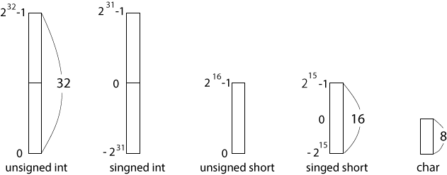

今日のプロジェクトは Import project(s) から、 Motor0 (モーターゼロ、括弧内は読み方であり、プロジェクト名の一部じゃないよ) です。 間違えないように。
LPCxpresso で src/vs-wrc103.c を開き、 関数 Mtr_Run_lv が定義してある箇所を探せ。
// これはよくないプログラムの例だぞ。 void run(void) { Mtr_Run_lv(10000,0,0,0,0,0); Wait(3000); Mtr_Run_lv(0,0,0,0,0,0); } int main(void) { const unsigned short MainCycle = 60; Init(MainCycle); run(); return 0; }
「16ビット、符号付き整数」でわかる人は演習を続けよう。
short の前に基本の int を理解する。
int x; の宣言の省略しない書き方は signed int x;
signed int x; // int x; としても同じ。
32bit のメモリ領域を確保し、その場所を名前 x で参照する。
| x |
|
| 番号 | ビットパターン | unsigned int | signed int |
|---|---|---|---|
| 1 | 00000000 00000000 00000000 00000000 | 0 | 0 |
| 2 | 00000000 00000000 00000000 00000001 | 1 | 1 |
| 3 | 00000000 00000000 00000000 00000010 | 2 | 2 |
| ... | |||
| 231-1 | 01111111 11111111 11111111 11111111 | 2,147,483,647(231-1) | 2,147,483,647(231-1) |
| 231 | 10000000 00000000 00000000 00000000 | 2,147,483,648(231) | -2,147,483,648(-231) |
| ... | |||
| 232-1 | 11111111 11111111 11111111 11111110 | 4,294,967,294 | -2 |
| 232 | 11111111 11111111 11111111 11111111 | 4,294,967,295 (232-1) | -1 |
32ビットのメモリで整数を表現するとき、C では二通りのビットパターン解釈を用意している。 ひとつは unsigned int でパターン全部で正の整数を表す。 もうひとつは signed int でパターンの半分を正の数、残り半分を負の数を表すパターンとする。みんなが何気なく定義している int x; などは singed int x; の singed が省略されたもの(Ｃでは singed/unsigned を省略すると singed が省略されたとする決まりがある)。
便宜上、メモリを縦長の四角で表す。

int, short, char は確保するメモリ領域のがどのくらいの大きさなのかを決め、 signed やunsigned はその確保されたメモリ領域内の 1/0 のパターンの解釈の仕方を決めている(さらに言えば、double や float、char なども同じ)。
関数 Mtr_Run_lv の定義(src/vs-wrc103.cに見つかる)は、
void Mtr_Run_lv(short m1, short m2, short m3, short m4, short m5, short m6)
{
...
}
m1,m2,m3,m4,m5,m6 にはそれぞれ16 ビット符号付き整数で、 その範囲は -215~215-1。 その範囲外の数字を Mtr_Run_lv( )に与えても、メモリが溢れてしまい、 結果としてロボカーは期待する動きをしない。
215はいくらか。それくらい自分で計算しなさい。
もっと相応しい名前の関数で Mtr_Run_lv( ) をラップしよう。 例えば foward(10)で 10cm 前進、 backward(30)で 30cm 後退になるようにプログラムしよう。
右回り関数や左回り関数も同様にプログラムしておこう。
授業で学んだことを前提に、以下の問いに取り組みなさい。 5. はグループ課題。 授業の内容を反映していない、出すだけの回答は激しくマイナス。 出さないほうがマシ。グループの力を結集し、よく練った回答を 提出 すること。